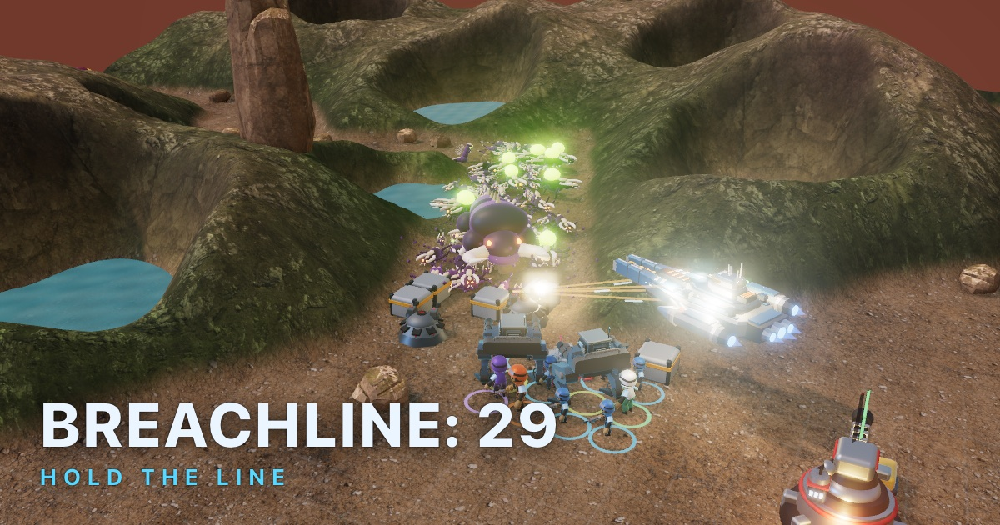

Rift Warden
Rounds 5, 15, 25 and every tenth round after. Your first real test.

Each round has one goal: keep the Ridge Relay at your base alive and destroy every enemy hive.
Every shortcut stays within reach of a left hand on WASD. On a touch screen, tap a unit and then tap where it should go. Pinch to zoom and twist to rotate.
| Action | Input |
|---|---|
| Select units | Click, or Shift + drag a box |
| Select all of a type on screen | Double-click, or Ctrl + click |
| Move, attack, garrison, repair | Right-click |
| Pan the camera | Left-drag or arrow keys |
| Rotate and tilt the camera | Middle-drag, or Alt + left-drag |
| Zoom | Mouse wheel |
| Control groups | Ctrl + 1–9 to set, 1–9 to select, double-tap to jump |
| Whole army attack | A |
| Stop | S |
| Defend (stay home when the army attacks) | D |
| Overdrive | F |
| Air strike | R |
| Promote selected unit | Shift + F |
| Redeploy last round's army | Shift + D |
| Pause | Space |
Costs are in minerals. Specialists join the build bar as the rounds climb, so each new threat arrives with a new answer.
| Unit | Key | Cost | Unlocks | Best used for |
|---|---|---|---|---|
| Trooper | Q | 60 | Round 1 | Cheap rifle infantry. The only unit that can garrison a bunker, and it promotes through four ranks. |
| Barrier | W | 25 | Round 1 | A wall that slows the swarm and shapes its route. |
| Bunker | B | 80 | Round 1 | Holds two Troopers and gives them +50% damage and +2 range. |
| Atlas | G | 160 | Round 1 | Rocket walker with long reach. Your dependable anti-air. |
| Vector | V | 240 | Round 1 | Fast gunship that flies over terrain and hits ground and air. |
| Hammer | T | 280 | Round 1 | Heavy tank with splash damage against ground targets. Press D for siege mode. |
| Torch | C | 110 | Round 2 | Flame trooper that burns packed ground bugs. Weak against armor. |
| Spectre | X | 150 | Round 3 | Marksman with very long range who ignores armor and picks the biggest target. |
| Medic | E | 100 | Round 4 | Heals the most injured unit nearby and scatters three mines when placed. |
| Titan | Z | 900 | Round 5 | Flying capital ship with a charged main cannon. Limit of three. |
New strains arrive on a fixed schedule. The Scout button shows what is coming next and which units counter it.
| Strain | First seen | Threat | How to beat it |
|---|---|---|---|
| Ripper | Round 1 | Fast melee swarm | Massed rifles, Torches and Hammer splash. |
| Needler | Round 3 | Fires spines from beyond a new Trooper's range | Outrange it with Atlas walkers or Spectres. |
| Brute | Round 4 | Armored blocker | Spectres and Hammers. Rifle fire loses damage to armor. |
| Wraith | Round 5 | Fast flyer that ignores your walls | Atlas walkers and Vector gunships. |
| Leaper | Round 6 | Vaults over walls | Keep guns behind the wall. One thin line will not stop it. |
| Brood Ray | Round 7 | Armored acid flyer | Concentrated Atlas fire. |
| Corroder | Round 8 | Slow acid artillery that melts defenses from range | Hammers and Spectres, or send units out to hunt it. |
| Behemoth | Round 8 | Huge armored siege beast | Spectres and the Titan's main cannon. |
| Tunnel Maw | Round 9 | Bursts from the ground and swallows a unit | Move out of the amber ring before it erupts. Aircraft and bunker crews are safe. |
A boss attacks every fifth round, calls in reinforcements and marks the ground before its Firestorm and Earthquake land. Spread your buildings out and move troops away from the warning rings.
Rounds 5, 15, 25 and every tenth round after. Your first real test.
Round 10. The first hard boss, with far more health and heavier attacks.
Round 20. A giant spider that brings a larger brood to the fight.
Round 30 and beyond. The last thing most outposts ever see.
Every boss you kill drops treasure and lets you choose an evolution that lasts for the rest of the run.
The swarm is already on the move. Put these orders to work and see how long you can hold Outpost 29.
Join the defense